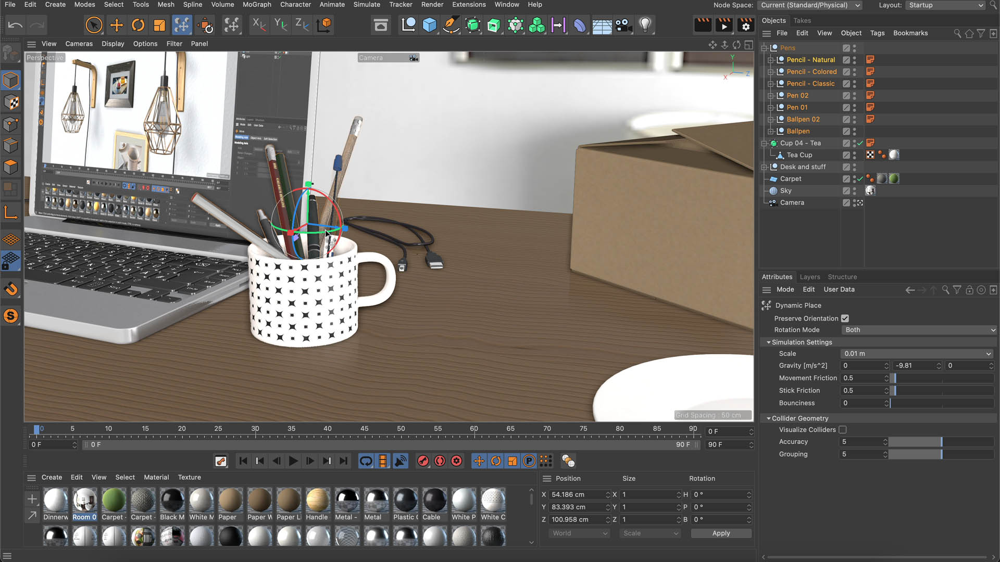
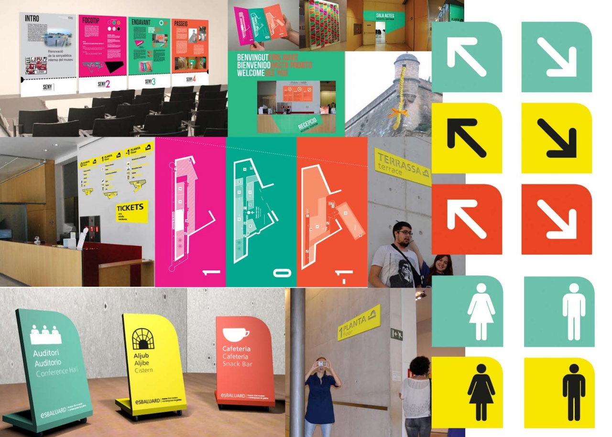

María Marta Corona Figueroa
-
Materias de cuarto año, primer ciclo:
-
Diseño Digital V:
Diseño Digital V es una materia donde aprendemos una programación más avanzada,
aprendiendo a utilizar códigos y tambien el programa Visual Studio Code, el cual
nos ayuda a programar de formas más fácil una página en HTML.

-
Animación y Modelado 3D:
Esta materia nos enseña sobre el modelado y la animación en 3D, aprendiendo desde
Maxon Cinema 4D, el cual nos permite crear diferentes figuras las cuales
podemos modificar a lo que deseemos y darles animaciones.

-
Innovación, Diseño y Desarrollo de Productos:
En esta materia la creatividad es sumamente importante y fundamental, ya que se
necesita tener buenas ideas para poder dar los mejores resultados. Aprendemos a
como pensar en productos innovadores de forma que podamos saber el proceso de la
creación de un nuevo producto hasta que sale a la vista de todo el mundo.

-
Diseño de Señalética:
Las señalitas son algo cotidianos en nuestro día a día, son de suma importancia
y por eso mismo debemos aprender de la forma correcta a como crearlas, como acoplarlas
a el ambiente en el que se ubicaran y los diferentes estilos que estas pueden tener
sin dejar de ser funcionales, para esto es esta materia.
